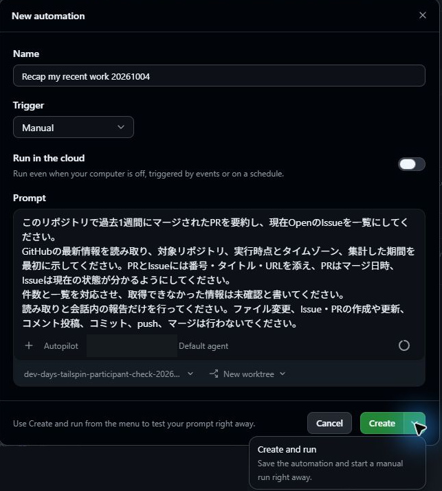
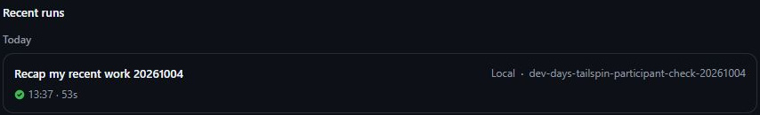
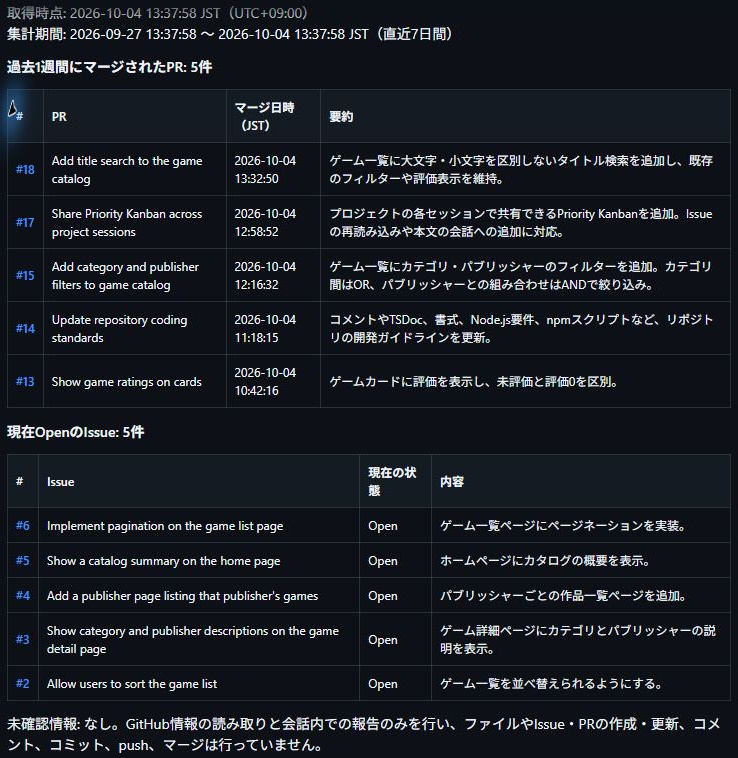

9.1 章の概要
同じ調査を繰り返すとき、毎回チャットへ指示を書き直すと、対象期間やPR・Issueの状態の指定が少しずつ変わることがあります。Automationへ調査条件を保存すれば、同じ方法で調べる作業を繰り返せます。
自動化の実行が成功したことと、報告内容が正しいことは別です。調べた対象や期間、報告の一覧と件数をGitHubの情報と照合し、任せた範囲で調査できたかを判断する方法を学びます。最後に、ワークショップで使った機能と人が行った判断を振り返り、日々の開発で使う機能やモードを作業に合わせて選びましょう。
9.1.1 この章で学ぶこと
| この章で行うこと | 到達した状態 |
|---|---|
| 対象リポジトリ・期間・PRとIssueの状態・報告の根拠を指定した、読み取り専用の指示をAutomationに保存する | 何をどの期間・状態で調べ、何を根拠に報告するかが明確で、同じ条件で調査を繰り返せる |
| AutomationをManual・Localで実行し、終了状態と報告をGitHubの情報と照合する | 実行の成功と報告内容の正しさを区別し、保存した指示の修正が必要か判断できる |
| 教材で使った各機能とセッションのモードを振り返る | 作業に足りない情報や確認手段を基に、使う機能・モードと人が判断する範囲を説明できる |
| 自分の開発で試す小さな課題を選び、完了条件・検証方法・人が判断する場面を整理する | 課題に合う機能と検証方法を選び、その理由と人の役割を説明できる |
9.2 取り組む前に
前章で作ったゲームのタイトル検索PRを自分の演習用リポジトリのmainへマージし、GitHubで検索IssueのClosed、Canvasで最新のOpen Issue一覧を確認しておきます。Automationの対象にも、自分の演習用リポジトリを指定します。GitHubでそのリポジトリのPRとIssueをブラウザーから確認できる状態にしてください。
今回作るAutomationには、GitHubのPR・Issueの読み取りと会話内の報告だけを任せます。ファイルやIssueを変更する自動化へ進む前に、Automationが何を調べ、どのような報告を出すかを1回の実行で確かめるためです。Manualは実行タイミング、Localは実行場所を表す別々の設定として読みます。
9.3 ケース
このケースで作成するのは、自分の演習用Tailspin ToysリポジトリのPRとIssueを調べ、会話内に報告するAutomationです。実行の成功表示と、GitHubの情報に照らした報告の正しさを別々に確認します。
| 観点 | このケースで扱う内容 |
|---|---|
| 状況 | ゲームのタイトル検索PRをmainへマージし、検索IssueがClosedになっている。演習用リポジトリには、これまでにマージしたPRと現在OpenのIssueがある。 |
| 課題と理由 | 調査のたびに指示を書き直すと、対象期間やPR・Issueの状態の指定が少しずつ変わることがある。同じ条件で調査し、実行が成功しても報告内容が正しいかを確かめる必要がある。 |
| 解決策 | 過去1週間にマージしたPRと現在OpenのIssueをGitHubから取得する指示をAutomationに保存する。Manual・Localで1回実行し、対象期間、PRとIssueの一覧、件数をGitHubと照合する。 |
Automationへ任せるのは、GitHubのPR・Issueの読み取りと会話内の報告だけです。定期実行やファイル・Issueの変更へ進む前に、1回の実行で何を調べ、どのように報告するかを確認します。以下の手順は、調査条件の保存、実行、報告の照合の順です。
9.3.1 読み取り専用のAutomationを設定する
GitHub Copilot appのAutomationsでは、繰り返す作業の指示を保存し、手動または設定したトリガーで実行できます。新しいIssueの調査や、PRのレビュー状況確認などが公式の用途例です。本演習では、演習用リポジトリで過去1週間にマージされたPRと現在OpenのIssueを調べる作業をAutomationへ保存します。GitHub公式のAutomationsの説明
Automationの定期実行へ進む前に、1回の実行で取得するPR・Issueと、会話へ出力される報告を確かめます。報告を自分で読めるタイミングで実行するため、TriggerにManualを選択します。
- Appのサイドバーで Automations を選択し、画面内の New automation をクリックします。
- 名前欄に
Recap my recent workなどの分かりやすい名称を入力します。 - Triggerで Manual を選択し、Run in the cloudはオフにします。Dailyなど別の値が選ばれている場合はManualに変更してください。公式には時刻やIssue・PRのイベントを使うトリガーもありますが、本演習では手動実行の結果を確認します。公式の設定手順
- 演習用リポジトリに変更を加えないよう、新しいAutomationの指示欄に次のような読み取り専用のプロンプトを入力します。
このリポジトリで過去1週間にマージされたPRを要約し、現在OpenのIssueを一覧にしてください。
GitHubの最新情報を読み取り、対象リポジトリ、実行時点とタイムゾーン、集計した期間を最初に示してください。PRとIssueには番号・タイトル・URLを添え、PRはマージ日時、Issueは現在の状態が分かるようにしてください。
件数と一覧を対応させ、取得できなかった情報は未確認と書いてください。
読み取りと会話内の報告だけを行ってください。ファイル変更、Issue・PRの作成や更新、コメント投稿、コミット、push、マージは行わないでください。- Select project で自身の演習用Tailspin Toysリポジトリを選択します。GitHub連携とローカルフォルダーの両方が登録されている場合は、
owner/repository表記で対象を確認してください。

9.3.2 Automationを実行して結果を確認する
- AppのAutomation作成画面で Create ボタン横のメニューを展開し、Create and run を選択して保存と同時に即時実行します。保存のみを行う場合はCreateを選び、後からAutomations一覧の実行ボタンでも開始できます。
- 作成したAutomationの Recent runsで今回の実行を開き、実行場所がLocal、ステータスが Succeeded になったことを確認します。Automationが会話へ出力した報告の照合は、次の小節で行います。
SucceededはAutomationの処理の終了状態です。調査対象のリポジトリを取り違えたり、PRのマージ日時の範囲を誤ったりしても、報告を出力する処理自体は完了する場合があります。報告では「過去1週間にマージされたPR」を数え、「現在OpenのIssue」を取得しているかをそれぞれ確認してください。報告にあるURLからGitHubの個別のPRやIssueを開くと、件数が同じでも対象が違う場合に気づけます。

画像は今回の実行行を読むための例です。自分が作成したAutomationの名前、対象リポジトリ、実行場所、成功状態を確認してください。
9.3.3 報告をGitHubの情報と照合する
Automationの報告を読む前に、GitHubで自分の演習用リポジトリの過去1週間のマージ済みPRと現在のOpen Issueを確認し、報告に含まれる項目を予想してみましょう。次の観点でGitHubの情報とAutomationの報告を照合します。
| 照合する情報 | 確認すること |
|---|---|
| 対象と取得時点 | 自分の演習用リポジトリで、実行時点とタイムゾーンが示されているか |
| PRの対象期間 | 開始・終了日時が分かり、その期間にマージされたPRを数えているか |
| Open Issue | 現在OpenのIssueが並び、前章でClosedになった検索Issueが除外されているか |
| 件数と項目 | 件数と一覧が対応し、番号・タイトル・URL・日時・状態がGitHubと一致するか |
| 調査の範囲 | 取得できなかった情報を未確認とし、不要な変更や投稿をしていないか |

Automationが報告するPRとIssueは、実行時点と演習の進み具合によって変わります。第8章でマージした検索PRが集計期間内ならPRの要約に含まれ、検索IssueがClosedならOpen Issue一覧の対象外です。実行日が変われば「過去1週間」の範囲も変わるため、画像の件数を正解とせず、自分のAutomationの報告に書かれた期間と実行時点を基準に確認してください。
Automationの報告とGitHubの情報が一致しない項目があれば、対象リポジトリと集計期間を確かめ、Automationに保存した指示を修正してもう一度Manualで実行します。Automationの処理が成功し、報告内容もGitHubと一致することを別々に確認できたところで、今回のAutomationの演習は完了です。
9.4 結果の整理と振り返り
Automationに保存した条件どおりに演習用リポジトリのPR・Issueを取得でき、GitHubとの照合で報告内容の一致を説明できたでしょうか。Automationの実行の成功と、PR・Issueの調査の正しさを分けて確認した経験を、これまでのCIやMCPの検証とも比べてみてください。
9.4.1 ワークショップで実践した開発の流れ
本ワークショップの全レッスンを通じて、GitHub Copilot appを活用した機能の企画立案から実装・検証・マージに至るエンドツーエンドの開発フローを実践してきました。これまで習得した主な内容は次の通りです。
| 作業の段階 | 実践したこと |
|---|---|
| 準備 | リポジトリを接続し、worktreeの構造と用意されたIssueを把握した |
| 計画と実装 | プロンプトやIssueからセッションを開始し、PlanとAutopilotで作業の進め方を制御した |
| 規約と検査手順 | カスタム指示と再利用可能なスキルで規約と手順を共有し、生成物と実行結果を確認した |
| 画面の検証 | Playwright MCPの実行を確認し、実ブラウザーでUIの動作を検証した |
| 課題の比較と共有 | Canvasで課題を比較し、別セッションで同じ表示と操作を再利用した |
| mainへの統合 | 手動マージとAgent Mergeを使い、品質を確認して変更を統合した |
9.4.2 作業に合わせた機能とモードの使い分け
本ワークショップでは、エージェントへ要件を渡す方法、作業の進め方を決める方法、エージェントの作業結果を検証する方法を段階的に学びました。指示ファイル、スキル、MCP、Canvas、Automationは、それぞれ違う課題に使います。エージェントへ依頼する作業に足りない情報や確認手段を考え、必要な機能を組み合わせて選んでください。
| 機能 | どのような場面で使うか | 人が確認すること |
|---|---|---|
| Instructions | リポジトリ共通の規約を伝える | コーディング標準のIssueが求めるコメントと、生成されたコード例が一致するか |
| Skills | 繰り返す検査手順をまとめて使う | スキルに定義した検査が実際に実行され、各検査が成功したか |
| MCP | エージェントから外部ツールを操作する | 接続表示に加え、実ブラウザーで目的のUI操作ができたか |
| Canvas | 課題や成果物を同じ画面で比較・操作する | GitHubの最新Open Issue一覧か、Issue本文追加が実装を勝手に始めないか、別セッションでも使えるか |
| Agent Merge | レビュー後のPR監視とマージを任せる | 対象PRでエージェントに許可した操作、CI全ジョブの成功、AppとGitHubのMerged |
| Automations | 保存した調査条件で作業を繰り返す | 実行終了に加え、報告の対象期間、PR・Issueの一覧と件数がGitHubと一致するか |
リポジトリへ指示ファイルやスキルを保存すると、同じリポジトリで始める次のセッションへチームの規約や検査手順を渡せます。ただし、書いた指示が期待どおりに適用されたかは、エージェントが生成したコードと検査の実行結果で確認します。公式のカスタマイズの説明も、指示、スキル、MCPを個別に説明した資料です。規約を伝えたいのか、手順を再利用したいのか、外部の情報や操作が必要なのかを先に整理すると選びやすくなります。
Appのセッションのモードも、作業の段階に合わせて使います。Planで行うのは、エージェントが作成した実装計画の条件や影響範囲を読み、エージェントの質問へ回答して計画を承認する作業です。Interactiveでは、実装の差分を見ながらエージェントへ修正の意図を細かく伝えられます。Autopilotへ進むときは、要件と検証方法に加えて、「ここまで進めたら止める」という範囲も示してください。たとえば第5章の実装を依頼するときは、第6章のMCP検証を終えるまでPRを作らないと指定します。工程の区切りを伝えることで、人が実画面を確認する時間を確保できます。公式のモード説明
次に別の機能の実装をエージェントへ依頼するときは、「何を作るか」「なぜ必要か」「既存の何を維持するか」「どの結果なら完了か」を伝えてみてください。Tailspin Toysの検索機能なら、検索対象はゲームのタイトルで、カテゴリ・出版社の条件とANDにし、既存の星評価を残すという要件がそれに当たります。期待するゲームの件数を実データから決め、テストと実画面の両方で確認する方法も再利用できます。
9.4.3 日々の開発への取り入れ方
日々の開発業務や個人プロジェクトでGitHub Copilot appを使い続ける中で学べるのは、AIエージェントへ伝える要件や、人による確認が必要な場面です。保守、趣味のプログラミング、新しいアイデアのプロトタイプなどに活用し、知見をチームの指示ファイルやスキルへ反映してください。
最初の実践では、小さな課題を1つ選び、完了条件と検証方法を言葉にしてから着手してください。作業後には、最初の指示で伝わったこと、レビューで補ったこと、次回も使える指示や確認手順を振り返ります。自動化できた操作だけでなく、どの判断を人が行ったかも残すと、次に任せる範囲を決めやすくなります。
同じ調査を繰り返すならAutomation、チームで課題を比較するならCanvas、実ブラウザーで再現する必要があるならMCPが候補です。ワークショップでもっとも手戻りした作業を1つ選び、その原因に合う機能と確認方法を説明できれば、自分の開発作業にも応用できます。
GitHub Copilotエコシステムの全容をさらに深く学ぶには、以下の関連教材も合わせて参照してください。
- VS Codeハーネス
- Copilot CLIハーネス（本教材の参考コース）
- Cloud agentハーネス
9.5 補足
9.5.1 同じ調査条件で作業を繰り返す理由
毎回チャットへPR調査の指示を書き直すと、ある日はマージ済みPR、別の日は作成したPRを数えるなど、調査の条件が変わりがちです。Automationに対象リポジトリ、期間、PR・Issueの状態、報告に含める番号やURLなどの根拠を保存すれば、同じ範囲を繰り返し調べられます。Automationの報告を比較するときにも、PRのマージやIssueへの対応が進んだから件数が変わったのか、集計条件を変えたのかを見分けやすくなります。
9.5.2 件数や項目が一致しないとき
Automationの報告とGitHubのPR・Issueの件数が一致しない場合は、対象リポジトリ名、集計開始・終了日時、PRのマージ済みとClosedの区別、一覧取得の漏れを確認してください。GitHubの権限不足や取得失敗がある場合は、AutomationがPR・Issueを0件と断定せず、未確認として報告しているかも読みます。Automationに保存したプロンプトを修正したら再びManualで実行し、報告とGitHubを同じ観点で照合してください。
報告の照合中に、対象リポジトリの別のPRがGitHubでマージされたり、Issueの状態が変わったりした場合は、その変更時刻も見ます。Automationの報告に日時、番号、URLを含めるのは、件数の違いを調査条件の誤りと判断する前に、どのPR・Issueをいつ取得したかを追えるようにするためです。
9.5.3 定期実行とCloud実行への発展
ヒント GitHub公式ではAutomationのCloud実行も案内されており、端末の電源が入っていない間にも実行できます。利用にはリポジトリや組織の設定などの前提があり、Toolsで作業に必要な操作を選びます。定期実行とCloud実行は発展課題です。試す場合は、公式の前提条件と設定方法を確認し、Manualで検証した調査範囲と結果の確認方法を引き継いでください。
9.5.4 さらに確認する価値のある機能
本教材で扱った流れを自分の仕事に適用するときは、次の機能も検討できます。以下は公式情報に基づく紹介で、本演習の完了条件には含めません。
- Chats：専用ブランチやworktreeを作る前に、疑問や要件を整理する会話。実装セッションに渡す前提を明確にするときに使えます。
- Rubber duck：現在の計画、実装、テストへ具体的な批評を求める機能。指摘を受けた後は、要件と実データに照らして修正するかを判断します。
- Custom agents：特定の専門役割、専用ツール、個別指示をパッケージ化し、繰り返し呼び出せるカスタムエージェント
/chronicle：セッション履歴から最近の作業を振り返るためのコマンド。本章のAutomationはGitHubのPRとIssueを調べましたが、/chronicleはセッションでの作業履歴を調べる入口です。- Cloud sandboxes：GitHubがホストする分離されたLinux環境でセッションを実行する機能。ローカルの開発環境から実行場所を変えたい場合に、利用条件と必要なツールを確認して検討します。
- Deep links：特定のリポジトリ、セッション、初期プロンプトを指定したURLリンクからアプリを直接起動する機能